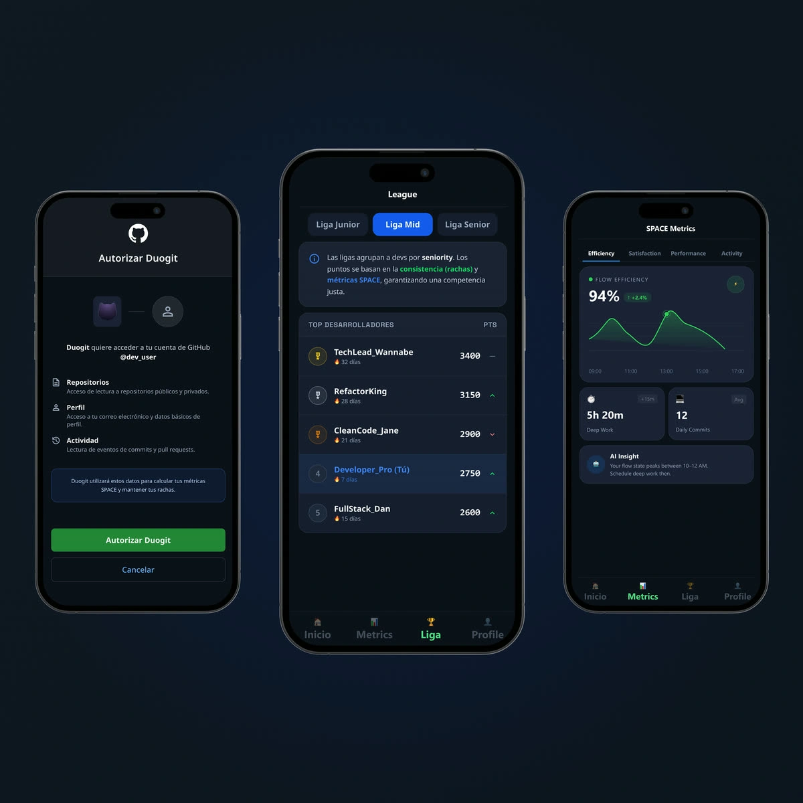
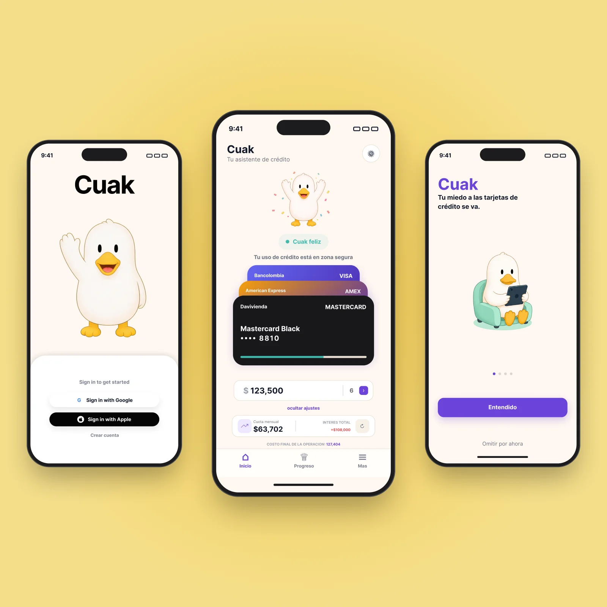

Craft
How I build
Three habits that show up in every project: characters designed with a job to do, raw data turned into something readable, and presentation treated as part of the deliverable — not an afterthought.
Characters designed with a job to do
A mascot isn't illustration sitting on top of an interface — it's part of the interface. Every state I design starts from a data trigger, not a mood board: what real user behavior should change how the character looks, and what should the user do next because of it.
Cuak's five states each map to a credit-usage threshold. DuoGit's cat maps to streak health. Same discipline, two completely different visual languages — because a fintech user and a developer don't respond to the same tone.
 Happy
Low credit usage
Happy
Low credit usage
 Worried
Billing date approaching
Worried
Billing date approaching
 Happy
Active streak
Happy
Active streak
 Worried
Streak at risk
Worried
Streak at risk
Cuak — warm, rounded
The context is financial anxiety. The last thing that helps is a character that reads as distant or "cool."
DuoGit's cat — dry, direct
Developers notice forced friendliness immediately. The character had to earn trust without trying too hard.
Turning a GitHub feed into something worth opening
GitHub's contribution API gives you dates and counts. Technically correct, emotionally empty — nobody opens an app to look at a JSON payload. DuoGit takes that same feed and reshapes it into three layers of meaning, without inventing a single new data point.
Contribution counts
Dates, commit counts, streaks — technically correct, emotionally flat.
SPACE metrics, not vanity counts
Counting commits rewards volume. A panic day with 40 commits isn't progress.
Streak as emotional state
The same "7 days" number, now carried by a mascot that reacts before the streak breaks.
From individual surveillance to social context
Same activity data, reframed as peer ranking — motivates without the pressure of one person measured against their own past self.
The streak should be readable without opening the app
That is what the widget layer is for: the state lands on the home screen, and the app is where you go for the detail behind it.
Mockups sell the work too
The same work, presented poorly, reads as weaker work. I learned this rebuilding my own portfolio's homepage: real, finished screens sitting loose in mismatched frames undersold everything behind them.

DuoGit
Panel tint #0F1922 — matches the artwork's own background exactly.

Cuak
Panel tint #F4DE86 — no visible seam between mockup and container.
Compose, don't just place
Screens staggered like a hand of cards, not lined up in a flat row — one screen leads, the others get discovered.
Match the panel to the artwork
The container background is sampled from the screenshot itself. A generic white or black frame creates a seam that reads as unfinished.
Never below 2× render size
A pixelated mockup undermines the credibility of the work it's showing, regardless of how good the actual design is.
Want to see it applied end-to-end?
Both case studies walk through research, decisions and outcomes in full.